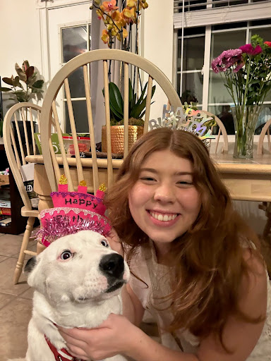
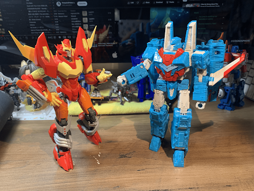

Visual Thinking Analysis
I exchanged ideas with Emma. I really like her idea of creating an I Spy layout by collaging images that she took as she grew up! I can just imagine the amount of easter eggs or little nods to certain events that she experienced, true to the name of the game. She showed me various snap shots of her life, such as her birthday cake, her playing soccer when she was little, as well as her cat dog.
I chose to post this particular photo because it was a day of happiness for her, and she chose to celebrate the day with her dog by putting the Happy Birthday hat on top of their head and taking a picture. I didn't discuss this with her but later one, I also spotted tons of plants in the background, which I can only assume that they have a green thumb or that other guests and friends have brought flowers to celebrate the day. Emma is also kind of wearing white clothes that match her dog, whether that was intentional or not.
For my ideas, I wanted to incorporate Transformers into my project. One of my first ideas was to combine my collection of Transformers and Nail Polish together where users can click on a Transformer and a color combo would pop up using that specific Transformer's color scheme. I'm still not too sure about my idea though. I got inspired by Emma's I Spy idea and created another idea where I could create a layout of what I experienced as a Transformers colletor, such as buying the figures from a location, taking the toy and its accessories out of the box, posing them, placing them on my desk, etc. Basically like a documentation?
Visual Thinking Strategies Research
Michael Gonchar's 10 Intriguing Photographs to Teach Close Reading and Visual Thinking Skillsgave me a lot to think about when it came to trying to come up with ideas for my Every Picture Project. It reminds me of the famous quote, "A picture is worth a thousand words.", in the sense that there's a lot happening within a single picture that can't be quickly understood in a short timeframe. Which is why stopping for more than a moment and really analyzing what's going on in the picture is important, so that we might find details that we might not have seen otherwise.
While browsing through awwwards.com, my attention was first caught on Pretty Patty not only because I was hungry but also because I thought its color scheme of yellow with blue is an interesting choice for what I assumed to be a food website. As I was scrolling through the website, I noticed the great amounts of images used throughout the website. With my limited html knowledge on image interaction, the interactions were very simple. For example, the hero image first loaded as a cropped circle and then it expanded as I scrolled down in order to cover the entire screen with the image. There was like a second of gray screen before everything loaded up. The next image interaction consisted of smaller shaped images in a horizontal scroll that moved as I scrolled down. Other assets like the headers and certain sections would have an animation where it looked like it faded in or zipped into place. There certain sections where phrases would continuously move as a secondary piece to the section.
Overall, they used lots of images but with simple animations!